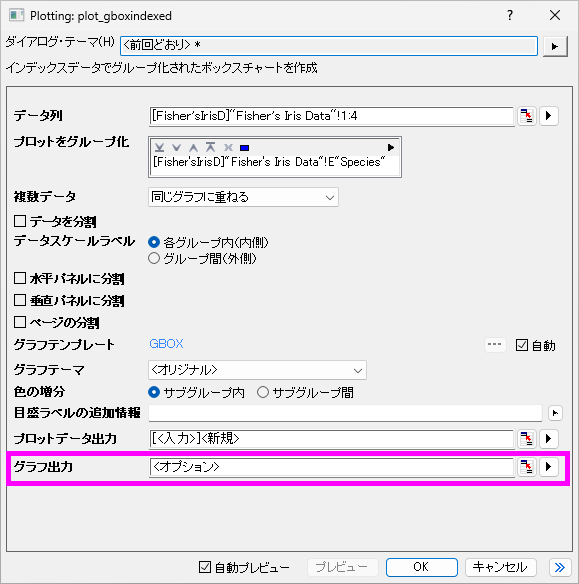

Separate-Graph-for-Stats-Plot
最終更新日：2026/1/5
Origin 2025bからは、グループ化棒グラフ、グループ化ボックスチャート、P-Pプロットなどの統計グラフがレポートシートに埋め込まれ、バッチ作図に便利になっています。
以前のバージョンのように、グラフを別々のグラフウィンドウにプロットする場合は、
ダイアログ内のグラフ出力編集ボックスで
<オプション>
と入力します。

キーワード:グループ化ボックスプロット、PPプロット、Q-Qプロット、統計グラフ、個別ページ